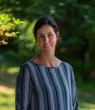
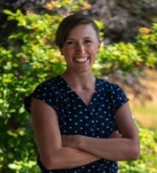
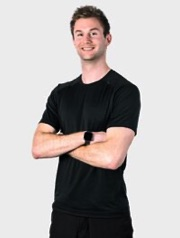

Therapists
Kendra Mulligan BScPT, CGIMS, FCAMPT

Kendra graduated from the University of Alberta in 1993 and started
her career in a progressive private practice manual therapy clinic
offering excellent mentorship in Grande Prairie, AB. She worked in
Northern Alberta for 18 years with 5 of those years owning a
physical therapy practice and focusing on treatment of
musculoskeletal conditions. Kendra grew up on a cattle farm in
Northern BC spending time in 4-H and was involved in community
sports playing competitive fastball, slowpitch and recreational
basketball and volleyball. Kendra is active in the local mountain
biking community and enjoys nature and exploring local, regional and
North American mountain biking destinations. In 2013, Kendra
completed her FCAMPT certification - an internationally accredited
program for utilizing clinical reasoning, exercise prescription ,
and manual therapy including manipulation for optimal treatment
results. Kendra then continued to support the manual therapy
education system with the Orthopedic division of the Canadian
Physiotherapy Association by working as teaching assistant on manual
therapy courses and offering mentorship to fellow physiotherapists.
In 2014, Kendra completed the University of Toronto Evidence Based
Practice program. In November - April 2021, Kendra completed her
Level 1 Foundations of Anatomical Acupuncture and she has been
certified in GunnIMS (dry needling) since 2007. Kendra has co-owned
Ascent Physiotherapy in Comox, BC since 2010 with Ron Mulligan and
is proud of the contributions that the clinic and physiotherapy
staff have made to the Comox Valley by offering best practice,
evidence based manual therapy and community activity involvement.
Trish Leslie BScPT

Trish graduated from Queen Margaret University in Edinburgh with a
Bachelor's of Science in Physical Therapy, with honours, in 2011.
She has worked as a physiotherapist in orthopaedics, women's health,
geriatrics, neurology and sports physiotherapy. Trish has also
worked with rugby players at the Leith Rugby Club in Edinburgh and
James Bay Rugby Club in Victoria. Trish has worked in private
practice as well as acute care since 2012. Through her practice she
focuses on manual therapies, physiotherapy modalities and exercise
prescription. Since graduating university she has continued to
complete additional courses in orthopaedics and women's health as
well as being certified in acupuncture from Acupuncture Foundation
Canada Institute. Trish grew up in Ucluelet but is happy to have
ended up in the Comox Valley and is loving it here.
Jared Hromika MPT, FDN/IMS

Jared graduated from the University of British Columbia in 2014 with
a Masters of Physical Therapy and moved to the Comox Valley with his
wife in the summer of 2015. Before moving to the valley, he worked
in Vancouver at several locum positions in private practice
orthopaedics in order to gain exposure to different patient
populations and approaches to treatment. This experience has helped
Jared consider movement problems from different perspectives while
providing a framework for his post graduate development. Jared's
approach to treatment involves movement assessment, manual therapy
techniques, and exercise prescription in order to help you move more
effectively and with less pain. He also has additional training with
Neurokinetic Therapy, which is a method of assessment and treatment
for compensation patterns that have developed over the years and
often go unnoticed. This helps direct treatment towards the cause of
your symptoms and improve your overall quality of movement. In
addition to physiotherapy treatment, Jared is excited to provide
Ascent Physiotherapy with bike fitting services. He was introduced
to triathlon in 2006 and has enjoyed working on his bikes ever
since. While enrolled in the masters program at UBC, he completed
additional training through the BC Division of Sport Physiotherapy
Canada for rider assessment and bike fit to optimize a rider's
efficiency and comfort in the saddle. When he's not in the clinic or
on his bike, Jared enjoys many activities including swimming, trail
running, softball and hockey
Shadi Fleifel MPT, FDN/IMS

Shadi has been part of the Ascent Physiotherapy Team since 2018. He
graduated with a bachelor's degree in Kinesiology at Western
University in London Ontario, before going to Perth, Australia to
complete his Master's degree in Physiotherapy in 2008. Shadi brings
with him a wealth of experience and skills to Ascent Physiotherapy.
He has worked with high level sports teams of all kinds throughout
his career including a premier level rugby club in Australia, James
Bay rugby club and the Canada Rugby 7's team in Victoria BC. Shadi
is passionate about sports rehabilitation; and with over 10 years of
clinical experience, excels in treating sports injuries and
“everyday” injuries, including neck and back pain, overuse injuries,
and acute musculoskeletal injuries. Shadi is dedicated to continuing
his education, and has participated in several courses to improve
his Physiotherapy skills; including The Brian Mulligan mobilization
with movement, Ron Alexander functional fascial taping level 2,
Orthopaedic division level 2, Lyn Watson advanced shoulder
assessment and rehabilitation, and IMS. When not in the office you
will find Shadi hard at play with his kids at the park or enjoying a
workout. His workout interests include crossfit, swimming, biking
and running, rugby, basketball and surfing.
Chelsey de la Rey MPT

Chelsey completed her Bachelor of Human Kinetics degree at Trinity
Western University in Langley before graduating from the University
of British Columbia with her Masters of Physical Therapy in 2019.
Chelsey grew up in the Comox Valley and is excited to return to the
area to provide clients with individualized care according to their
activities and goals. She aims to provide comprehensive assessments
and treatment, which includes hands on manual therapy, exercise
prescription and education for self-management. Chelsey has
completed her Orthopedic Division Level 1, as well as an
introduction to the Bobath concept and looks forward to pursuing
further education in manual therapy, pain science and active
rehabilitation. Chelsey has always been heavily involved in sports,
as she competed as a varsity athlete and has coached a variety of
youth basketball and volleyball teams and camps throughout the
province. Additionally, she has enjoyed working with varsity
athletes as a student athletic therapist and strength coach. Away
from the clinic Chelsey and her Husband can be found on the golf
course, out fishing, at the gym or competing in a variety of sports
such as curling, basketball and volleyball.
Dylan Rybski MPT, IMS

Dylan completed his Master's of Physical Therapy at the University
of British Columbia following a Kinesiology degree at the University
of Victoria. He's furthered his skills through advanced training in
concussion management, orthopaedic manual therapy and is also
certified in IMS dry needling. Originally from Vancouver Island,
Dylan's passion for rehabilitation stemmed from an athletic history;
working as a patient through his own sports-related injuries and
ailments. Dylan spent his first few years practicing in Vancouver
and is excited to be back starting a new chapter on the island in
the Comox Valley. His clinical experience has led to the development
of individual patient based therapies using a blend of active
exercise rehab and practical skills. His easy going demeanour, light
heartedness, and professionalism result in enjoyable and productive
sessions. Dylan hopes to use his background of working with a
variety of clientele including professional athletes, weekend
warriors, post surgical, ICBC, and occupational rehab to help you
achieve your goals. When not in clinic, you may find Dylan enjoying
the outdoors, at the gym, chilling at the beach, on the ice, or
hacking it up golfing.